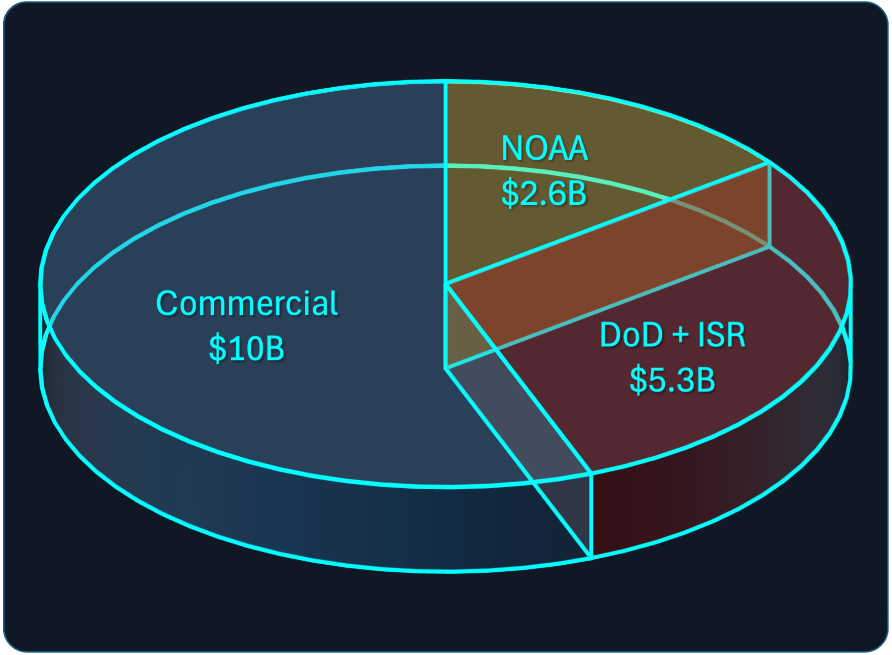
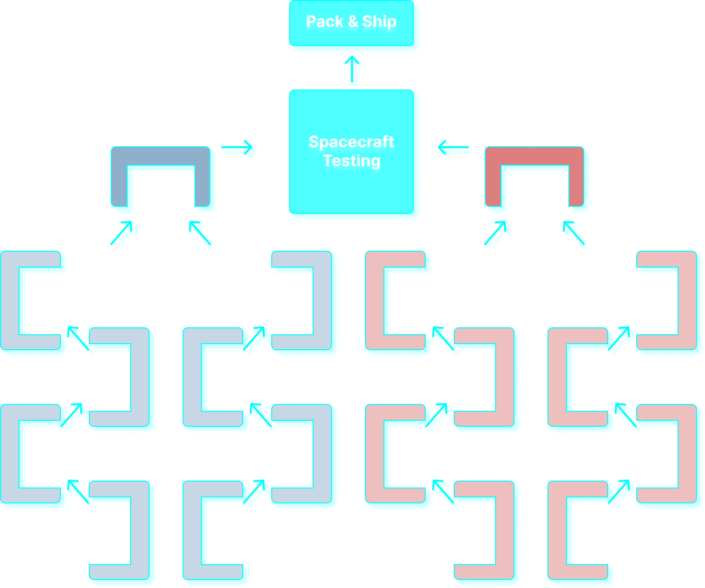

Market Analysis
Weatherwave is building a new class of orbital weather and environmental intelligence: coordinated smallsat flocks, a rapid U.S. production line, and launch-ready instrument deployment that turns national needs into operational capability in a fraction of today’s timelines.
Market Opportunity
Total Addressable Market
Weatherwave's Total Addressable Market (TAM) is estimated at $18B in recurring annual demand for environmental and geospatial information in 2035.
NOAA & Federal Weather (~$2.6B) U.S. national weather and environmental missions require resilient sensing from space but face increasing pressure to incorporate commercial providers. The shift toward mixed government–commercial architectures expands this addressable market beyond traditional program budgets.
ISR / DoD (~$5.3B) — Defense and security organizations require persistent awareness of weather, hazards, and environmental conditions that affect operations. Rapid revisit and all-weather data are strategic advantages that current systems cannot deliver at scale.
Commercial (~$10B) — Global agriculture, insurance, energy, and logistics rely on orbital environmental data for yield optimization, risk modeling, and operational forecasting. These markets are already purchasing space-based analytics today, but lack the cadence and fused-sensor capability that Weatherwave provides.
Why Weatherwave Wins Market Share
Weatherwave integrates modern production methods with coordinated multi-satellite sensing to address the growing need for rapid, high-quality environmental intelligence. Rather than relying on infrequent flagship missions or single-sensor imagers, our approach emphasizes cadence, calibration, and adaptability. The following capabilities highlight the system-level benefits of this architecture.
High-Cadence Flocks
Coordinated flocks of smallsats collaborate as a single instrument, enabling quick refresh over priority regions and higher environmental insight than single-sensor imagers.
Rapid U.S. Production
Weatherwave is building a modern smallsat production line that cuts integration and deployment timelines from years to weeks, enabling real operational tempo.
Flagship-Class Data Quality
Multi-angle sensing, improved calibration, and coordinated measurements produce scientific-grade products suitable for national missions and high-value commercial use.
Market Strategy
Increasing Scope Over Time
Weatherwave's market strategy starts by fulfilling government needs and quickly grows to address the larger market.
Weatherwave’s market entry strategy is built around disciplined, phased growth. Our earliest opportunities come from government customers with urgent needs: NOAA and the National Reconnaissance Office require rapid-cadence weather and environmental intelligence, while NASA and DARPA fund advanced sensing, autonomy, and technology development.
These early partnerships provide both non-dilutive capital and technical validation. As Flocks begin flying, Weatherwave immediately gains access to commercial demand across agriculture, insurance, supply-chain risk, and energy sectors. These markets already rely on satellite data, but lack the revisit rates and fused-sensor insight our architecture uniquely provides.
Because Weatherwave deploys frequently, upgrades continuously, and manufactures domestically, every new Flock makes the constellation more capable, expanding our competitive advantage over static monolithic systems and slow-refresh commercial constellations.
Revenue Model
Lean Thinking
Weatherwave's plans include a satellite manufacturing line steeped in lean thinking. By driving waste out of the system and increasing efficiency over time, increasing revenues raplidly turn into increasing profits.
Weatherwave generates revenue through government mission contracts, commercial data subscriptions, and rapid instrument deployment. As the constellation grows, recurring multi-sector revenue increases while per-unit production costs fall through vertical integration within our lean factory floor.
A Track Record of Transformational Impact
Weatherwave was founded by Jason Derleth, MIT graduate with over 20 years of experience at NASA. His work shaped mission designs, technology development planning, the Agency's structure, and national space policy. About half of Jason's career was spent leading the NASA Innovative Advanced Concepts (NIAC) program as Program Manager and Program Executive.
Learn More